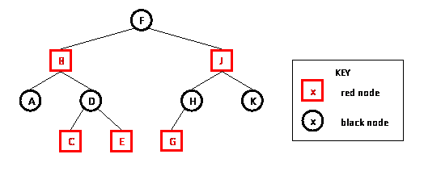

Red Black Tree
Introduction
The important idea behind all of this trees is that the insert and delete operations may restructure the tree to keep it balanced. So lookup, insert, and delete will always be logarithmic in the number of nodes but insert and delete may be more complicated than for binary search trees.
A red-black tree is a binary search tree in which
- each node has a color (red or black) associated with it (in addition to its key and left and right children)
- the following 3 properties hold:
1.(root property) The root of the red-black tree is black
2.(red property) The children of a red node are black.
3.(black property) For each node with at least one null child, the number of black nodes on the path from the root to the null child is the same.
An example of a red-black tree is shown: 
A binary search tree is a red-black tree if it satisfies the following red-black properties:
1. Every node is either red or black.
2. Every leaf (NIL) is black.
3. If a node is red, then both its children are black.
4. Every simple path from a node to a descendant leaf contains the same number of black nodes.
Function
1.Insert-Insert a key value
2.Lookup-Determine whether a key value is in the tree
3.Delete-Remove key value from the tree
4.print all of the key values in sorted order
Because a red-black tree is a binary search tree and operations that don't change the structure of a tree won't affect whether the tree satisfies the red-black tree properties, the lookup and print operations are identical to lookup and print for binary search trees.
Applications
- Insertion-deletion takes less time in Red-Black Tree than AVL Tree.
- Red-Black Tree for insertion-deletion.
- The Complete fair process scheduler in Linux uses Red Black Trees.
- Computational Geometry Data structures
Run Code